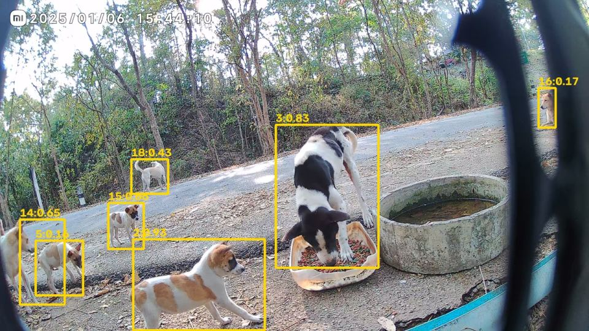
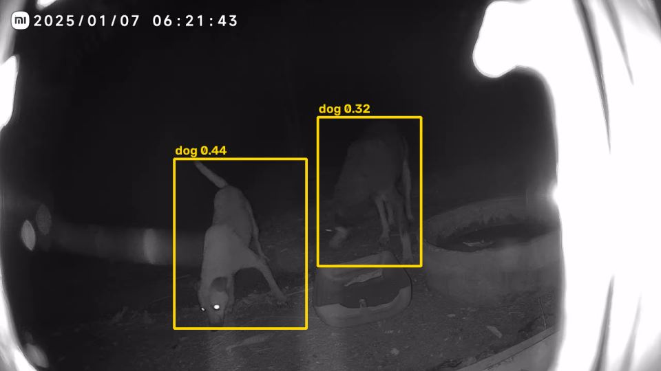
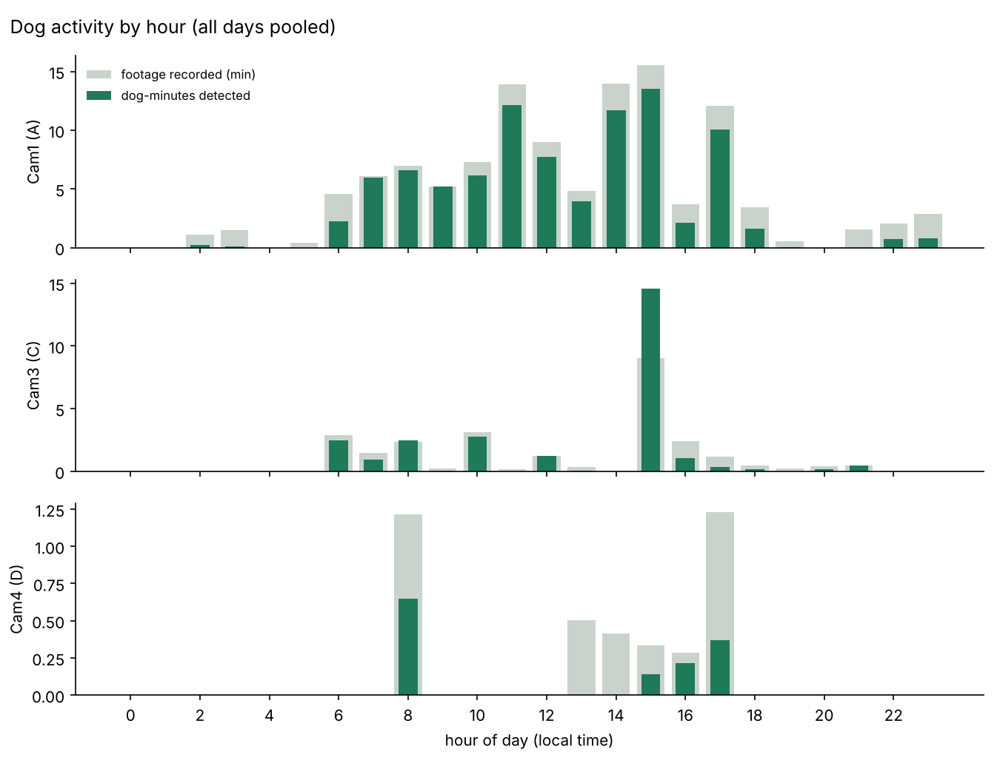
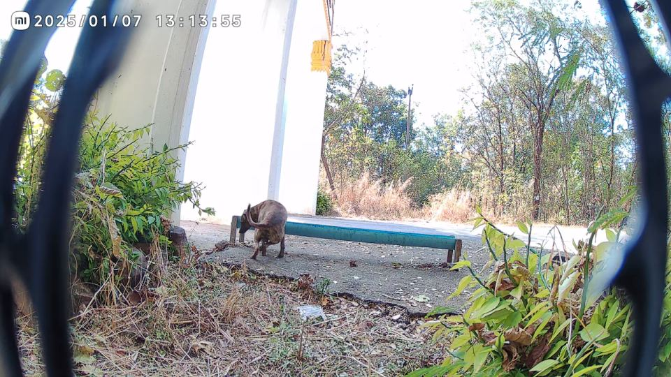
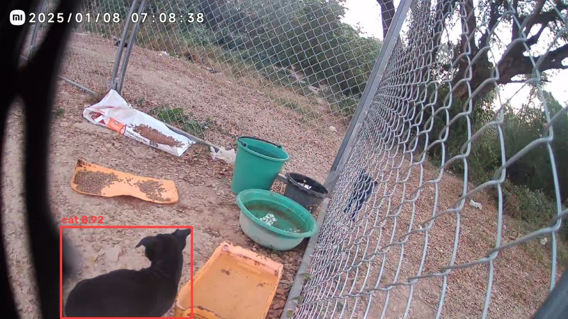
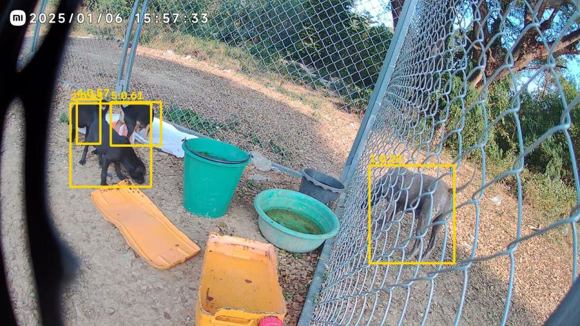

Finding stray dogs in raw camera footage from Chiang Mai
What the project is, what the data turned out to be, what has been built and found so far, how it will be evaluated, and what is left. Written to be read offline.
Repository Epp-ppE/stray-dog-detection (branch main)Status as of 24 Nov 2026Footage 6–8 Jan 2025, 3 cameras
1The assignment in one page
Stray dogs in Thai communities raise public-health (rabies), road-safety and welfare problems. Vaccination, sterilisation and community care all need basic facts: how many dogs, where, when, and how they behave. CMKL students placed cameras at community feeding spots in Chiang Mai to collect that information. The footage is raw: no labels, no annotations.
The task
Design and build a complete pipeline that detects dogs and locates them in the footage, then turn the detections into useful information (visits, counts, activity).
What has to be handed in
Deliverable
What it must contain
Status
Source code
Repository with environment setup, dependencies and instructions to reproduce every result
mostly built
Technical report: pipeline
Every step and why it was chosen (preprocessing, model, thresholds, post-processing)
to write
Report: results
Numbers plus pictures of successes and failures
needs labels
Report: limitations
Lighting, occlusion, false positives and negatives
to write (examples found)
Report: evaluation method
Metrics, validation strategy, baseline comparison
designed and coded
Dog recognition
Design for telling individual dogs apart across clips (code optional)
to write
2The data
The footage is stored in the repository's GitHub release data-v1 as three zip files (2.4 GB). Every video is a short clip recorded when the camera sensed motion. All cameras are the same Xiaomi model.
Camera
Scene
Files
Unique
Footage
Days
Night clips
Camera1 (Location A)
Fenced feeding spot, buckets and food mats
341
341
116.6 min
6–8 Jan
58
Camera3 (Location C)
Roadside water trough at a forest edge
74
73
26.0 min
6–8 Jan
7
Camera4 (Location D)
Bench beside a building, behind plants
32
11
4.0 min
6–7 Jan
0
Total
447
425
2.44 h
65
Every clip is 2560×1440 pixels, 15 frames per second, H.265 (HEVC) video with sound, 3 to 30 seconds long. "Night" clips are the camera's infrared mode: black-and-white, with bright glare near the lens.
Camera3 (Location C). Day frames and three infrared night frames. One clip shows a hand covering the lens, a typical source of false alarms.
Camera1 (Location A): many puppies, chain-link fence in front.Camera4 (Location D): dogs often half hidden; a person with a motorbike appears.
Two problems hidden in the raw files
Problem 1 · duplicate files
22 of the 447 files are exact byte-for-byte copies (found by comparing a fingerprint of every file's contents). Camera4 has 21 of them: names ending in (1) or (2), the usual sign of downloading the same file several times. Camera3 has one re-shared copy. If they were not removed, the same dog visits would be counted two or three times. Fix: the pipeline keeps one copy of each (425 unique clips) and never deletes raw files.
Problem 2 · Camera1's filenames give the wrong time
Camera3 and Camera4 filenames are timestamps (milliseconds since 1970) that match the clock burned into the video. Camera1's names, like VIDEO_20250108_161610468, all say 8 January 16:16 to 18:24, but the clock in the picture shows dates from 6 to 8 January, including the middle of the night. The names are most likely the time the clips were exported from the phone app, not recorded. Any "time of day" statistic for Camera1 built on the filenames would be wrong.
How the real time was recovered
The obvious tool, Tesseract text recognition, read only 2 of 20 test clips: the clock is white text with a thin dark outline, and on a bright sky the white disappears.
The clock strip after four kinds of clean-up. A person can read 2025/01/06 15:48:15, but background clutter defeats general text recognition.
Because the font, size and position never change, each of the 14 digit positions can be cut out and recognised on its own with a small classifier (k-nearest-neighbours on HOG shape features). The training labels came for free: Camera3/4 filenames give the exact true time of every frame. Tested on 25 clips it never saw:
Measure (held-out clips)
Result
Single digits read correctly
99.5%
Whole timestamp correct in a single frame
93.4%
Clip start time (median over all frames of the clip), error
≤ 0.13 s on all 25 clips
Applied to Camera1, every clip got a start time on which at least 80% of its frames agree. One spot check: a clip whose middle frame shows 15:01:24 gets a computed mid-time of 15:01:23.4. This is a good story for the report: the raw data had a hidden error, and it was detected, measured and corrected.
3The pipeline
Each step and why
Prepare. Find duplicates by file fingerprint; give every clip its real start time (filename for Camera3/4, clock reader for Camera1). Why: without this, visits are double-counted and Camera1's times are wrong.
Sample frames. Analyse 3 frames per second, shrunk from 2560×1440 to 1280×720. Why: there is no GPU. At 15 fps the full run would take about 5× longer, and neighbouring frames are nearly identical. 3 fps is still enough to follow a walking dog.
Detect. A YOLO11 model pretrained on the COCO dataset, which already contains a "dog" class. Why: there are no labels to train on, so a strong off-the-shelf detector is the honest baseline. All detections down to 5% confidence are stored, so thresholds can be tuned later without re-running the model.
Track. ByteTrack joins the boxes of one dog across frames into a track. A track counts as a dog only if it lasts at least 1 second and is confident at least once. Why: it removes one-frame flickers, the most common false alarm, and lets us measure how long a dog stays and how it moves.
Statistics. Visits, dogs per visit, dog-minutes by hour, moving versus resting, and dogs close together (interactions), per camera.
Speed on this computer (4 CPU cores)
Model
640 px input
960 px input
YOLO11n (nano, smallest)
41 ms / frame
85 ms
YOLO11s (small, used for the full run)
83 ms
204 ms
YOLO11m (medium)
226 ms
492 ms
Full run with YOLO11s at 640 px: 26,325 frames in 47 minutes. A larger model or input size only becomes the default if the evaluation shows it is clearly better.
4First results (before evaluation)
Out of 425 clips, the detector and tracker found 758 confirmed dog tracks in 351 clips. These numbers are not yet checked against human labels. Section 5 explains how they will be.

Success: Camera3 on 6 Jan, 15:44. Seven dogs at once, all real, including a small one far away on the right.

Success at night: both dogs found in infrared, but with low confidence (0.32 and 0.44), below a typical 0.5 cut-off.
Per camera
Camera1 (A)
Camera3 (C)
Camera4 (D)
Clips with at least one dog
84%
78%
73%
Visits (clips with dogs, gaps up to 2 min merged)
117
31
6
Visits per day
39
10
3
Typical (median) visit length
33 s
29 s
19 s
Most dogs on screen at once
4
7
3
Dog-minutes (sum over dogs of time on screen)
90.7
26.7
1.4
Share of dog time spent moving
11%
14%
30%
Night visits
14
4
0

Grey: minutes of footage recorded in each hour. Green: dog-minutes detected. Activity is concentrated between about 06:00 and 18:00, mostly around feeding times. Camera3 at 15:00 has more dog-minutes than footage because several dogs were on screen together. Camera4's empty grey bars at 13:00–14:00 are missed dogs (see below).Every recorded clip (grey) and every dog visit (green, larger = more dogs) over the three days.
Failure cases already found

Missed dog. Camera4, 7 Jan 13:13: a dog in plain view gets no confirmed track. The detector's best guess in this clip was 0.51 but never held for a full second. Plants and the black lens housing frame the scene.

Wrong class. A black puppy is called "cat" with 92% confidence and gets no dog box. The run produced 8,103 "cat" boxes, many of them likely puppies. The evaluation tests whether counting "cat" as dog helps.

Merged dogs. Camera1: three black puppies huddled together plus an adult behind the fence. One box partly covers two puppies, so close groups can be under-counted.
Other failure sources to discuss in the report: the infrared glare ring at night, the chain-link fence in front of Camera1, dogs lying down (unusual shape for the model), dogs cut off at the frame edge, a hand on the lens, and a person at Camera4.
5How the system will be evaluated
There are no labels, so a small labelled test set has to be made by hand. This is your labelling task.
Which frames
180 frames from 115 different clips, chosen at random by the computer before looking at any detections, so the test is not biased towards what the model finds easy.
Balanced across cameras and day/night: Camera1 50 day + 20 night, Camera3 45 day + 15 night, Camera4 50 day.
At most a few frames per clip, at least 3 seconds apart, because neighbouring frames are near-copies.
Split by clip into a dev half (87 frames, used to choose the confidence threshold) and a test half (93 frames, used only for the reported numbers). Choosing the threshold on the test frames would make the results look better than they are.
What will be measured
IoU
Overlap between a predicted box and a hand-drawn box (0 = none, 1 = identical). A prediction counts as correct when IoU ≥ 0.5.
Precision
Of the boxes the model drew, the share that were real dogs. Low precision means false alarms.
Recall
Of the real dogs, the share the model found. Low recall means missed dogs.
F1
One number balancing precision and recall. It is used to pick the best threshold on the dev half.
AP / mAP@0.5
Average precision over all thresholds: the standard single score for a detector. With one class ("dog"), mAP equals AP.
95% interval
Each test score gets a range from resampling the test frames 1,000 times (bootstrap). With 93 frames the uncertainty is real, and the report should show it.
"Hard" boxes
Dogs you mark as mostly hidden or too small to be sure are ignored: finding one is not rewarded, and missing one is not punished.
What will be compared (at least two models, as required)
Setup
Question it answers
YOLO11n / s / m at 640 px
Does a bigger model find more dogs, and is it worth 3–5× the time?
YOLO11s / m at 960 px
Do larger inputs help with small, far-away dogs (Camera3)?
YOLO11s + other animals as dog
Does counting "cat", "sheep", "bear" and similar classes as dog recover the puppies called cats, or just add false alarms?
YOLO11s + tracking filter
Does keeping only boxes that persist for a second trade a little recall for much better precision?
Results are also broken down by camera and day versus night, which feeds the limitations section directly. Predictions for all setups have already been computed and the scoring code has been tested. It only needs your labels.
6Dog recognition (design, to be written)
Detection says "a dog is here". Recognition says "this is Dog #12, also seen yesterday at Camera3". It is what turns counts into a population estimate and per-dog visit histories.
Training data: each track is already a set of crops of one dog, which gives free "same dog" examples. A person then joins tracks across clips into named dogs.
Features: a pretrained image model turns each crop into a numeric fingerprint (embedding). It is fine-tuned so that the same dog's crops land close together. New tracks are matched to a gallery of known dogs.
Extra clues: time and place. A dog seen 10 seconds earlier on the same camera is almost certainly the same dog.
Challenges visible in this footage: look-alike black puppies, colour lost at night, puppies growing, the fence, dogs eating head-down, different viewpoints per camera.
Evaluation: hand-match 20–30 dogs; report how often the right dog is the top match (rank-1) and whether the number of distinct dogs comes out right.
7What is done and what is left
Item
Status
Data download, duplicate removal, real recording times
done
Detection on all 425 clips, tracking, per-camera statistics and charts